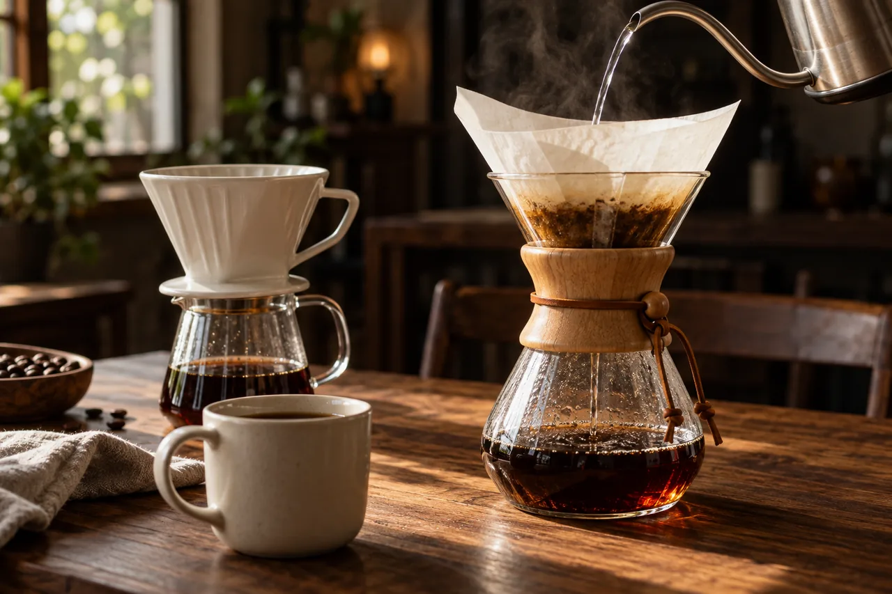

轻轻浮起
01 / LIGHT
轻玻璃
导航、小型控件。让光线多透一点。
68% 表面 · 10px 模糊 · 浅投影A LITTLE LIGHT. A LITTLE DEPTH.
先从你选中的这组按钮开始。
轻一点，透一点，按起来更舒服一点。

光线穿过玻璃，动作留在手上。
选一件顺手的器具，慢慢来。

一杯清晰、温柔的日常。
15 g
92 °C
1:15
仅演示界面，不启动冲煮或改变进度。
ONE MATERIAL, THREE DISTANCES.
同一束光，不同的承载。
从轻巧的导航，到安静包裹内容的面板。
导航、小型控件。让光线多透一点。
68% 表面 · 10px 模糊 · 浅投影信息与器具卡片。让阅读稳稳落下。
82% 表面 · 20px 模糊 · 中投影教学提示与弹窗。给重要内容多一点安定。
94% 表面 · 30px 模糊 · 深投影MADE TO BE FELT.
悬停轻抬，按下微沉，松手柔和归位。